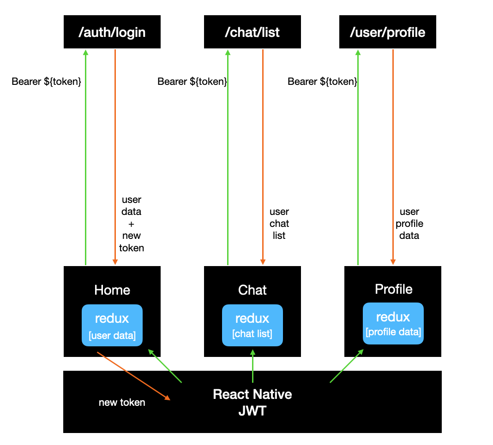
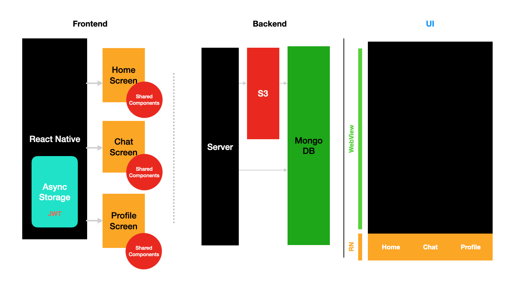
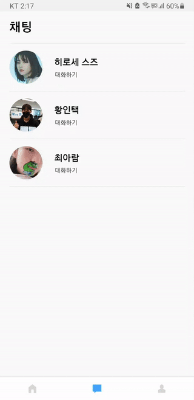
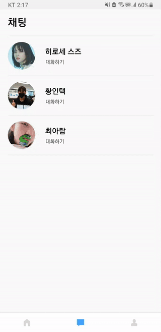

목차
컨텐츠
Ⅰ. React
- [TEAM] ① Sinder (개발자 매칭 앱)
-


 
펼쳐보기
keyword: React, React Native, WebView, Micro Frontend, SCSS, Storybook- • React Native를 사용한 개발자 매칭 모바일 서비스
- • Micro Frontend 아키텍처 위한 5개의 리포지토리 구성
- • React Native WebView를 사용한 네이티브 앱의 단점 최소화
- ② IGUR (인스타그램 보고서 제작 앱)
-
펼쳐보기
keyword: React, Node, MongoDB, Express, D3, Puppeteer, Styled-components, AWS (Elastic Beanstalk, S3, Route 53), Google Cloud Natural Language API, Tensorflow.js, Object Detection- • 검색한 인스타그램 사용자에 대한 보고서를 만들어주는 서비스
- • Puppeteer로 headless Chrome 환경에서 특정 인스타그램 사용자의 데이터를 크롤링
- • Google Cloud Natural Language API와 TensorFlow.js의 Object Detection를 이용해 게시글 설명을 자연어 처리하고 게시글 사진의 물체를 인식하여 추가 데이터 생성
- • D3로 자연어 처리 후 생성된 게시글의 항목과 카테고리 분류를 원형 차트로 출력
- • 프론트엔드에서 인스타그램 이미지의 src가 CDN url로 되어 있어 개인 페이지에서 호스트 하는 것이 불가능하여 이를 해결하기 위해 백엔드에서 axios로 fetch 하여 처리
- • 백엔드가 배포된 Amazon Linux 환경에서 puppeteer가 chromium을 설치하지 못해 크롤링을 못하는 문제가 발생하여 cli에서 curl로 chromium을 설치하는 config 파일을 추가
- • 위의 문제로 POST 요청이 안되는 문제를 브라우저에서 CORS 문제로 출력함에 따라 CORS 문제를 탐색함과 더불어 앱의 총체적 부분에서 문제를 파악하는 경험을 함


- ③ Dog API App
-

펼쳐보기
keyword: React, Mongoose, MongoDB, Express, Axios- • 리액트와 백엔드 툴(Mongoose, mongoDB, express)을 이용하여 Dog API & Database 풀스택 어플리케이션을 제작함.
- • 상위 App 컴포넌트와 하위 Chooser, Details, DetailForms, DetailViews 컴포넌트를 제작하여 직관적이고 유지/보수하기 용이하게 프로그램을 제작함. state와 props를 이용하여 부모/자식 컴포넌트 사이의 변수 전달이 수월하게끔 함.
- • 두 개의 form에서 데이터가 잘 처리될 수 있게 알맞은 이벤트 메소드를 만들어 리액트에서는 사용자의 인풋을 state를 사용하여 어떻게 처리하는지 이해하게 됨.
- • 리액트의 Lifecycle 메소드(componentDidMount, componentDidUpdate)를 이용해 컴포넌트의 첫 생성과 컴포넌트가 업데이트될 때 수행할 행동을 작성하였고 리액트 컴포넌트의 구동 방식에 대해 이해를 깊이 하게 됨.
- • Axios를 이용하여 dog API의 정보를 불러와 필요에 맞게 API를 사용할 수 있다는 걸 보여주고자 하였음. 해당 포트폴리오에서는 dog 리스트와 사진 데이터를 사용함.
- • Mongoose, mongoDB, express와 같은 백엔드 툴을 이용하여 사용자가 등록하는 comment를 mongoDB에 저장할 수 있게 하였음. 프론트엔드 기술에 중점을 두고자 해당 코드는 유지하되 백엔드 comment 기능은 구동되지 않게 하였음.
- • 본 포트폴리오를 통해 리액트의 컴포넌트 작동 방식에 대한 이해를 깊이하게 되었고 일반적인 HTML/JavaScript 프로그램과 다르게 state가 변화하는 컴포넌트만 re-render 되는 구동방식을 직접 경험한 것이 인상깊었음.
- ④ Note App
-

펼쳐보기
keyword: React, CSS, Grid- • 리액트를 사용하여 동적 프로그램인 노트 관리 프로그램을 만들어 HTML/JavaScript로 만든 어플리케이션과 리액트 어플리케이션 간의 생산성과 유지/보수 차이를 경험하고자 하였음.
- • 상위의 App 컴포넌트에 state를, 하위의 Form, Note, Tag 컴포넌트에 props로 데이터를 전달하여 컴포넌트 구성의 직관성을 높이고 유지/보수를 용이하게 함.
- • Form에 입력되는 여러 데이터를 처리하기 위한 여러 이벤트 메소드를 제작하여 사용자가 입력하는 값을 state로 어떻게 관리하는지 이해하게 됨.
- • 리액트의 componentDidMount, componentDidUpdate와 같은 Lifecycle 메소드를 이용해 컴포넌트의 첫 생성 시점에, 그리고 컴포넌트가 업데이트될 때 수행할 행동을 작성하였고 리액트의 컴포넌트 구동 방식에 대해 알게 됨.
- • 배열의 Map 함수를 이용하여 배열 안의 데이터를 쉽게 재가공하여 사용할 수 있게 프로그램을 작성함.
- • LocalStorage API를 이용해 사용자가 작성한 개별 노트가 저장되게 하였고 자바스크립트와 HTML5에서 제공하는 기본적인 API를 리액트에 활용할 수 있게 됨.
- • 본 포트폴리오를 통해 노트 관리 어플리케이션에 필요한 컴포넌트를 세분화하고 직접 제작하여 코드의 직관성, 유지보수성, 그리고 프로그램의 효율성을 직접 경험하게 됨.
Ⅱ. JavaScript
- ① Pokemon API App
-
펼쳐보기
Keyword: JavaScript, CSS, HTML, API fetching, eventListener, DOM manipulation, Grid, Responsive- • 외부 API의 가공되지 않은 데이터를 이용하여 완성도 있는 결과물을 보여줄 수 있다는 능력을 보여주고자 하였음.
- • 객체지향 프로그래밍 방식으로 자바스크립트의 api fetching, eventListener, DOM manipulation과 CSS의 viewport, grid system을 이용함.
- • 객체지향 프로그래밍 방식을 준수하여 직관적이고 재사용이 가능하게 프로그램을 작성함.
- • Pokemon 외부 api를 이용하여 데이터를 fetching하고 응답을 필요에 맞게 사용함.
- • 무한 스크롤링 기능을 구현하여 사용자가 효율적으로 필요한 만큼만의 데이터를 받아올 수 있게 함. 구현을 위해 Event 인터페이스, eventListener, 그리고 수학적 계산을 통해 스크롤이 맨 아래에 다다를 때 새로운 아이템을 불러오도록 함.
- • DOM manipulation을 통해 DOM 요소를 필요에 맞게 추가하고 제거하여 컴포넌트가 업데이트될 때 이전 요소를 제거하고 새로운 요소를 추가함.
- • CSS의 viewport 를 이용해 mobile portrait 모드, tablet portrait/landscape 모드, 그리고 desktop 모드를 지원하게 함. 지원하지 않는 mobile landscape 모드는 경고창을 띄워 사용자에게 다른 스크린 모드를 이용하도록 권고함.
- • CSS의 grid 방식을 이용해 효과적인 페이지 레이아웃과 포켓몬 카드 레이아웃을 구현함.
- • 본 프로젝트를 통해 자바스크립트의 api fetching, eventListener, DOM manipulation을 필요에 맞게 이용할 수 있는 능력, CSS의 viewport와 grid 방식으로 다양한 디바이스에 맞는 웹페이지를 보여줄 수 있는 능력을 배양함.
- ② Doraemon mini-game App
-
펼쳐보기
Keyword: JavaScript, CSS, HTML, Canvas, eventListener, Responsive- • 자바스크립트의 canvas를 중점적으로 이용해 도라에몽(캐릭터)을 움직여 목표 점수를 달성해야 하는 미니 게임을 만듦. 주요한 자바스크립트 사용 능력을 보여주고자 하였음.
- • 자바스크립트의 canvas/context, Image, setInterval(), eventListener등을 여러 function에 알맞게 이용함.
- • 백그라운드 이미지, 도라에몽, 그리고 도라야키(점수 획득용 아이템)를 객체화하고 렌더링하여 게임화하기 위한 설정을 마침.
- • 키보드 눌림을 인식하는 eventListener를 부착해 좌/우 키보드 버튼이 눌릴 때마다 도라에몽 캐릭터를 특정 값만큼 이동하게끔 함. 새로운 좌표로 이동할 때마다 canvas에 새로 그림이 그려질 수 있게 redraw() function을 구성하였고 redraw() 작동방식에 대한 이해를 깊이 하게 됨.
- • 도라야키가 하늘에서 떨어지는 모션을 구현하기 위해 100 milliseconds마다 아래로 이동하게끔 setInterval()를 이용함.
- • 객체지향적 방식으로 각 기능을 함수로 나누어 직관적이고 재사용이 가능하도록 제작함.
- • 본 포트폴리오를 완성하며 사용자의 입력을 감지하고, canvas를 사용해 그래픽 요소를 웹에 구현하고, 원하는 이미지를 이용, 객체화하여 수학적 계산을 통해 게임을 만들 수 있게 됨.
- ③ WebRTC/Canvas App
-

펼쳐보기
keyword: HTML5, JavaScript, CSS, WebRTC, Canvas, Online and offline events, eventListener, Flexbox, Responsive- • MDN 웹사이트의 HTML5의 새 기술을 주체적으로 공부하고 조합하여 포트폴리오를 만듦. 프론트엔드에서 HTML 및 HTML5의 기능에 대한 이해를 심화시키고자 하였음.
- • HTML5의 Camera(WebRTC API), Canvas, Online/Offline events, 그리고 local Storage API를 사용함.
- • WebRTC(Web Real-Time Communication)기술을 이용하여 웹캠으로 사용자의 화면을 실시간 스트리밍하고 사진을 찍을 수 있는 컴포넌트를 제작함.
- • Canvas 요소를 이용한 컴포넌트를 만듦. 사용자의 실시간 화면을 캡쳐하고 캡쳐한 사진 위에 그림 그릴 수 있게 하는 시각적이고 인터렉티브한 컴포넌트를 제작함.
- • Local Storage를 통해 효과적인 오프라인 경험을 제공하고자 하였음. 인터넷에 연결되지 않아도 사용자가 캡쳐하고 그림 그린 데이터는 localStorage 객체 안에 담겨 언제든 불러올 수 있음.
- • Online & Offline events를 사용해 상태바를 만들어 사용자의 인터넷 상태를 알려주는 편의성을 제공함.
- • 결론적으로, HTML5에 새로 발표된 기술을 포트폴리오의 필요에 맞게 구현해보며 다양한 HTML5 기술의 작동 방식을 깊이 이해할 수 있게 되었음.
- ④ Momentum To-Do App
-

펼쳐보기
Keyword: HTML, JavaScript, CSS, EventListener, Form, WeatherAPI- • 관심사를 분리하여 clock, login, quotes, todo, 그리고 weather에 대한 JavaScript 파일을 분리
- • 첫 로그인 화면에서 사용자는 본인 이름을 입력하고, 입력된 정보를 localStorage에 저장
- • setInterval 함수를 이용해 매 초마다 현재 시각을 받아오는 로직 작성
- • 사용자가 현재 geolocation 권한을 허가하면 해당 정보를 기반으로 현재 위치와 기온을 불러옴
- • To Do 작성을 매끄럽게 하기 위해 엔터키로 손쉽게 컨텐츠를 제출할 수 있게 함 (form & submit type button)
- • 사용자 편의성을 위해 수정 버튼을 클릭하거나 To Do를 더블 클릭하면 수정 창이 나오도록 함
- • To Do 수정을 매끄럽게 하기 위해 기존의 DOM을 CSS로 숨기고, 가장 가까운 부모 DOM에 새 form (입력창)을 부착하여 수정 기능을 추가했던 부분이 인상 깊게 남음
- • 알파벳 순서와 생성된 날짜로 정렬하는 기능 제작
- • random 함수를 이용해 랜덤하게 quote를 출력하는 기능 추가
Ⅲ. HTML/CSS
-
-
펼쳐보기
Keyword: Semantic Markup, 정적 페이지- • CSS 클래스를 모듈화하여 반복적인 작업을 최소화하며 코드 작성
- • 시맨틱 마크업을 준수하여 문서의 구조 및 맥락을 고민하여 코드 작성
- • 확장성을 고려하여 예시로 추가 기사가 추가될 경우, 기존의 ul, li 구조에 새로운 li를 추가하면 되게끔 제작
- ② 성공을 도와주는 가게
-
펼쳐보기
Keyword: Semantic Markup, 크로스 브라우징, CSS1 & 2, 정적 페이지- • CSS3의 기능 (grid, flex)를 사용하지 않고 CSS1과 2 문법으로 그리드 레이아웃을 제작하며 과거의 CSS 코드 작성에 대해 익혀보려 노력함
- • 예시로 페이지의 제목이 되는 로고를 h1으로 작성하며 HTML 문서의 맥락을 생각하며 작성
- • before과 after 같은 가상 클래스를 활용하여 HTML 태그를 최소한으로 사용하며 웹사이트 제작
- • ul, li에 더하여 dl, dt, dd 등 추가로 도입할 수 있는 HTML를 찾아보며 사용하려 노력함
- ③ 카이스트
-
펼쳐보기
Keyword: Semantic Markup, 모바일, 정적 페이지- • 반복되는 레이아웃에 대해 HTML 및 CSS 모듈화로 최소한의 반복 작업으로 코드를 작성하려 노력
- • 탭 및 버튼 등을 컴포넌트로 만들어 CSS 클래스만 추가하면 해당 컴포넌트로 사용할 수 있게끔 편의성 및 확장성 고려
- • 헤더 부분의 커스텀 디자인을 구현하기 위해 before 및 after 가상 클래스를 활용해 HTML 태그를 최소하하며 구현
- ④ 펜티 펜션 커머스
-


펼쳐보기
Keyword: Semantic Markup, 퍼블리싱, Responsive- • 주도적으로 모바일용 화면을 디자인하여 반응형 웹사이트로 제작
- • 모듈화하여 관리자 및 일반 사용자를 구분하는 채팅 레이아웃을 CSS 클래스로 컴포넌트화하고 확장성을 용이하게 함
-